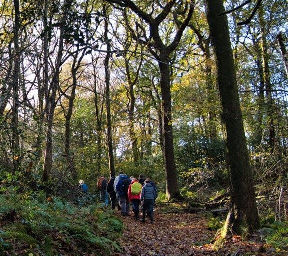
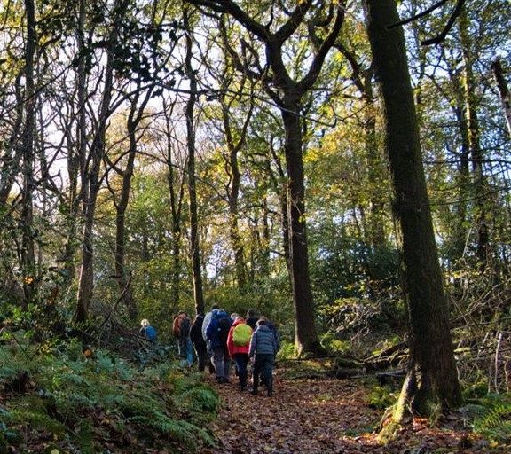

Select the priority aim for your woodland
 

About
This tool allows for land managers and practitioners to explore the management options for their woodland. Select a priority aim for your woodland and find out how you can maximise the benefits of woodland for your chosen aim. This tool is for guidance only and there are certainly many more possible aims for woodland management. The information provided here is designed to be a starting point for making decisions on habitat management that will maximise the potential of your woodland.